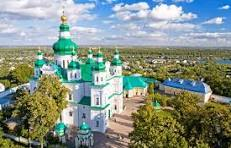
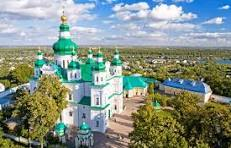

🌍 Saviez-vous que l’Ukraine est le plus grand pays entièrement situé en Europe ?
Avec ses 603 700 km², elle dépasse largement la France, l’Espagne ou encore l’Allemagne. Terre de plaines immenses, de villes historiques et de paysages variés, l’Ukraine occupe une place unique sur la carte du continent.
Nous allons brièvement approfondir différents points sur ce pays.
Histoire et culture
L’Ukraine possède une histoire millénaire et une culture unique, au carrefour de l’Europe et de l’Asie.
Berceau de la Rus’ de Kyiv, elle fut l’un des premiers grands États slaves et adopta le christianisme dès le Xe siècle.
Au fil des siècles, elle a connu des dominations étrangères, mais a toujours su préserver son identité grâce aux Cosaques, symboles de liberté.
Après de nombreuses épreuves, dont le terrible Holodomor et la période soviétique, l’Ukraine a retrouvé son indépendance en 1991.
La culture ukrainienne est riche et vivante. On la reconnaît à ses vyshyvankas (chemises brodées), ses danses énergiques comme la hopak, et sa cuisine chaleureuse avec le borsch et les varenyky.
Les fêtes traditionnelles, les chants populaires et la langue ukrainienne sont autant de trésors qui nourrissent aujourd’hui une identité nationale forte et fière.
Géographie et nature
L’Ukraine est le plus grand pays d’Europe, avec une nature étonnamment diversifiée. Des vastes plaines fertiles, surnommées « le grenier de l’Europe », aux montagnes des Carpates couvertes de forêts, en passant par les rives de la mer Noire, le pays offre une richesse de paysages. On y trouve des steppes infinies, des rivières majestueuses comme le Dniepr, ainsi que des parcs nationaux préservés qui abritent une faune variée. Cette diversité géographique fait de l’Ukraine une terre à la fois agricole, naturelle et touristique.
Villes et régions incontournables
L’Ukraine regorge de villes et de régions au charme unique. Kiev, la capitale, séduit par ses églises dorées et son mélange d’histoire et de modernité. Lviv, à l’ouest, dévoile une atmosphère européenne avec ses rues pavées et son héritage austro-hongrois. Odessa, sur les rives de la mer Noire, charme par son ambiance portuaire et ses escaliers Potemkine célèbres. Plus au sud, la Crimée reste un joyau naturel et culturel, tandis que les Carpates offrent montagnes, traditions et villages pittoresques. Chaque région possède son identité, reflétant la richesse et la diversité de l’Ukraine.
Gastronomie ukrainienne
La cuisine ukrainienne est généreuse et conviviale, à l’image de ses habitants. Le plat emblématique reste le borsch, une soupe colorée à base de betteraves, souvent accompagnée de pampouchky (petits pains à l’ail). On y retrouve aussi les varenyky, sortes de raviolis fourrés aux pommes de terre, au chou ou aux cerises, et les holoubtsi, feuilles de chou farcies. La gastronomie met à l’honneur les produits de la terre : légumes, céréales et viandes. Elle se partage autour de grandes tablées familiales, où hospitalité et traditions sont toujours au rendez-vous.
Actualité et avenir
Aujourd’hui, l’Ukraine est au cœur de l’actualité mondiale. Marquée par des défis politiques et sécuritaires, elle fait preuve d’une remarquable résilience. Malgré les épreuves, le pays poursuit ses réformes, renforce ses liens avec l’Europe et garde l’espoir d’un avenir plus stable et prospère. La jeunesse, tournée vers l’innovation et l’ouverture, joue un rôle clé dans cette transformation. Entre reconstruction, modernisation et préservation de son identité culturelle, l’Ukraine trace peu à peu la voie vers un futur qu’elle veut libre et indépendant.